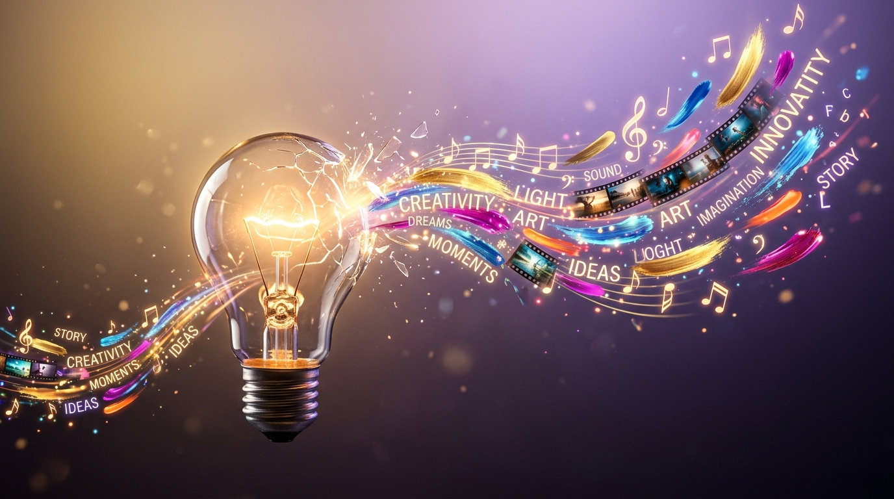
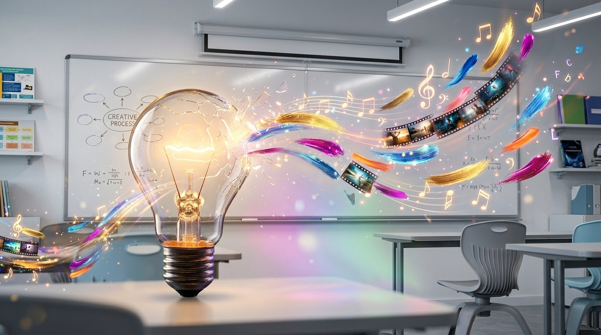
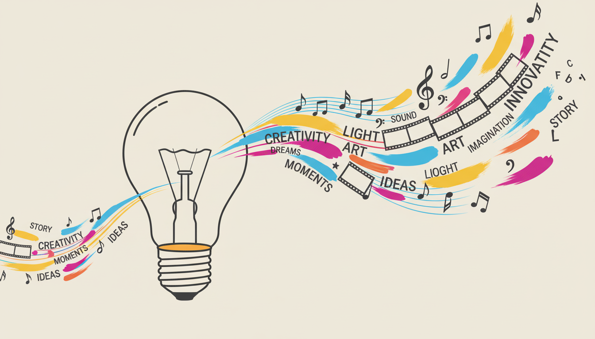

פלו העבודה שלנו ב-Google Flow
מתמונה אחת לסרטון שלם — שלב אחרי שלב
1

תמונה
Nano Banana
יצירת תמונה מפרומפט
התחלנו ביצירת תמונה מאפס — נורה זוהרת שמתפרקת לחלקיקים צבעוניים. כתבנו את הפרומפט בעברית וקיבלנו תוצאה מרשימה.
"נורה זוהרת מתפרקת לחלקיקים צבעוניים"
התמונה עוברת ל...
2

תמונה
Imagen 4
שינוי רקע עם שמירה על עקביות
לקחנו את אותה נורה והעברנו אותה לסצנה חדשה — כיתת לימוד. Imagen 4 שומר על הדמות המקורית ומשנה רק את הסביבה.
"What do you want to change?" → classroom setting
במקביל, שינוי סגנון...
3

תמונה
Whisk
שינוי סגנון — מריאליסטי לאיור
העלינו את התמונה המקורית ל-Whisk והפכנו אותה לאיור flat מינימליסטי. הפרומפט באנגלית עבד הרבה יותר טוב.
"flat vector illustration, minimalist style, light beige background"
עכשיו מחיים את התמונות...
4
סרטון
Animate (Veo)
הפיכת התמונה המקורית לסרטון
בלחיצה אחת על Animate (תפריט 3 נקודות), התמונה הריאליסטית הפכה לסרטון של 8 שניות עם תנועה ואור.
גם האיור הפך לסרטון...
5
סרטון
Whisk Animate
הפיכת האיור לסרטון אנימציה
גם את איור ה-flat הפכנו לסרטון — האנימציה שומרת על הסגנון המינימליסטי ומוסיפה תנועה עדינה.
חיבור הכל לסיפור...
6
סרטון סופי
Scene Maker
חיבור כל הסצנות לסרטון אחד
Scene Maker חיבר את כל הקליפים לסיפור שלם. בחרנו Start ו-End לכל מעבר, ו-Flow יצר מעברים חלקים ביניהם.
"הכל נעלם לאט, רקע לבן נקי עם נקודת אור זהובה קטנה במרכז שדועכת"
הכלים שהשתמשנו בהם
Nano Banana
יצירת תמונה
Imagen 4
עקביות + רקע
Whisk
שינוי סגנון
Animate
תמונה לסרטון
Scene Maker
חיבור סצנות
מתמונה אחת → 3 תמונות + 3 סרטונים
הכל בחינם עם 50 קרדיטים ביום